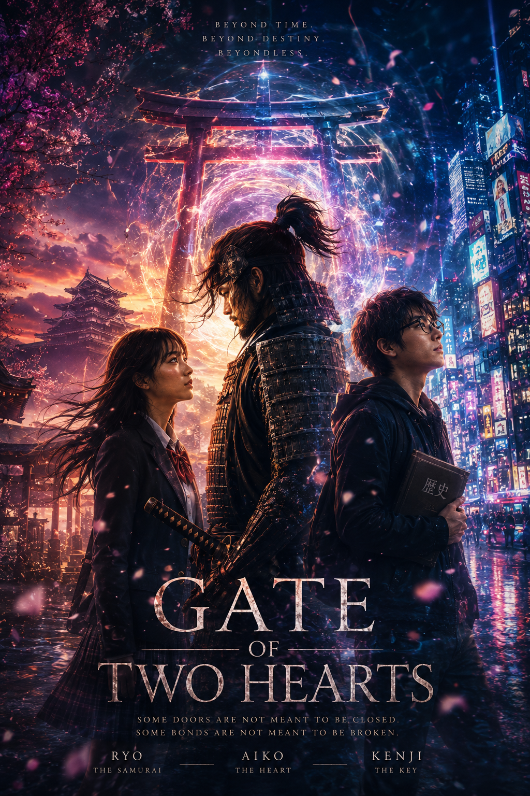

Gate to two hearts
A stoic samurai from the Edo period finds himself in modern-day Shinjuku, tethered to a girl who holds the key to his past—and a choice that could shatter time itself.
Narrated by Akiko
Voice-over Narration
Ryo, a samurai from the Tokugawa era, is suddenly thrown into modern Tokyo after walking through a mysterious torii gate during a storm. Lost in a world of neon lights, technology, and crowded streets, he accidentally saves a schoolgirl named Aiko from a speeding bike. Alongside her friend Kenji, who is obsessed with history and science, they slowly realize Ryo is not a cosplayer, but a real samurai displaced through time.
Kenji discovers ancient records about a “vanishing samurai” connected to a strange torii gate that appears during moments when history is about to change. The same shrine still exists in modern Japan, and recent lightning activity suggests the gate may open again. While Kenji researches the mystery, Aiko helps Ryo adjust to modern life. Ryo learns trains, ramen, convenience stores, and the strange peace of a world without war. Over time, he becomes deeply attached to both Aiko and the life he never imagined possible.
Aiko, meanwhile, feels trapped by the expectations of modern life and dreams of escaping somewhere she truly belongs. She and Ryo grow emotionally closer, bonding over their shared feeling of being lost between worlds. Kenji becomes increasingly obsessed with the torii gate, uncovering evidence that it doesn’t simply move people through time, but appears whenever history itself is unstable. He begins to suspect Ryo was brought to the future for a reason.
One stormy night, an old priest arrives at their apartment and reveals the truth: the gate is opening again, but this time it has become unstable because of Kenji’s attempts to study it. If it breaks completely, time itself could collapse, erasing memories, people, and entire histories. The priest explains that Ryo now faces two choices. First, he can return to his original era and continue the life he was meant to live, though it will leave emotional scars on Aiko and Kenji. Second, he can remain in the modern world, but at the cost of losing all memories of his past life as a samurai.
Before Ryo can decide, the gate drags all of them into a strange space outside time itself. There, two gates appear: the original red gate representing duty and sacrifice, and a new unstable blue gate accidentally created by Kenji’s experiments. The blue gate shows glimpses of a future where all three of them live together peacefully. However, using it could completely rewrite reality. The priest warns them that this “third path” should not exist and could destroy everything.
Ryo realizes he cannot choose between abandoning his past or erasing who he once was. Instead, he grabs both gates at once, refusing to let time decide his fate for him. Aiko and Kenji hold onto him as the gates collapse together. Memories, timelines, and identities begin breaking apart as the three of them fight against the rules controlling their lives. Ryo declares that if time is a circle, then they should draw that circle themselves instead of blindly following destiny.
When Ryo wakes up, reality has changed. He is no longer a samurai living in modern Japan. Instead, he has always existed there as an ordinary student and friend of Aiko and Kenji. However, fragments of the old timeline remain buried inside their memories like dreams they cannot fully explain. Aiko remembers visions of Ryo standing beneath a red torii gate in the rain, always leaving her behind. Kenji discovers an old photograph showing three figures beneath the shrine gate with a note calling them “The three who defied the gate.”
The three slowly realize they succeeded in doing the impossible. Rather than choosing between fate and sacrifice, they rewrote time itself together. Though the memories of their previous lives are fading, the emotional bond between them remains. Ryo understands that even without remembering every detail of who he once was, he still found his way back to the people who mattered most. The story ends with the three walking into modern Tokyo together while the old torii gate quietly waits in the distance, ready for the next person daring enough to challenge destiny.

Artistic Direction: Sumi-e ink wash textures blended with cinematic neon aesthetics. A visual representation of the collision between tradition and modernity.
Key Moments
The Vanishing Samurai
A displacement through time.
Ryo arrives in modern Tokyo, adjusting to ramen and neon lights while Aiko helps him navigate a world of peace.
The Third Path
Defying the rules of destiny.
Faced with two impossible choices, Ryo grabs both the red and blue gates, refusing to let time decide his fate.
The Rewritten World
A bond that survives time.
The world is remade. Though memories fade, the connection between Ryo, Aiko, and Kenji remains as a timeless echo.